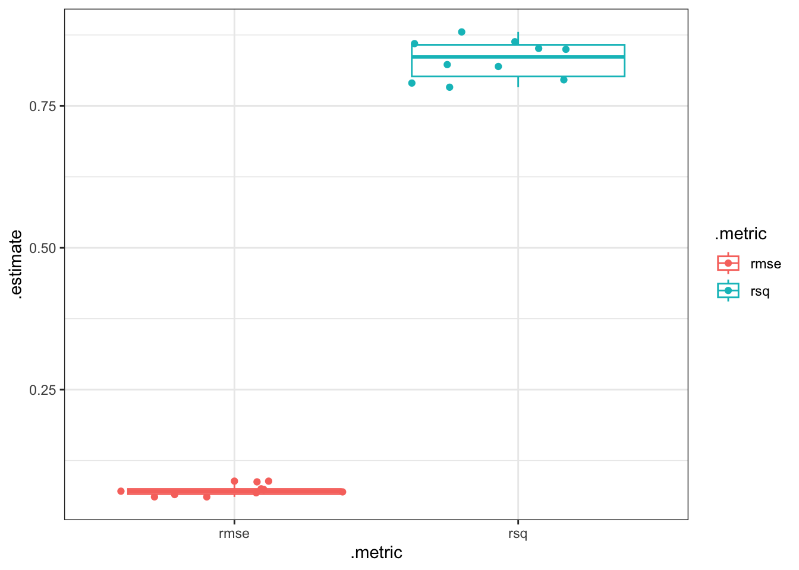
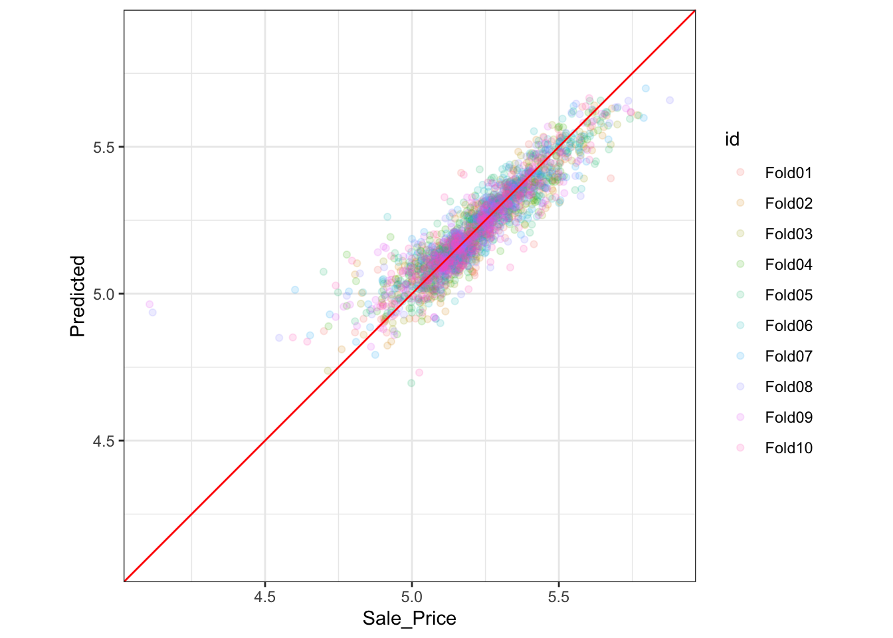

# A tibble: 2 × 6
.metric .estimator mean n std_err .config
<chr> <chr> <dbl> <int> <dbl> <chr>
1 rmse standard 0.0721 10 0.00306 Preprocessor1_Model1
2 rsq standard 0.832 10 0.0108 Preprocessor1_Model1
## create a box plotcollect_metrics(rf_res, summarize = F) |>ggplot(aes(y=.estimate, x = .metric,color=.metric)) +geom_boxplot() +geom_jitter()

assess_res <- rf_res |>collect_predictions()assess_res %>%ggplot(aes(x = Sale_Price, y = .pred, color = id)) +geom_point(alpha = .15) +geom_abline(color ="red") +coord_obs_pred() +ylab("Predicted")

Compare Between Models
For comparing multiple model and performance this is what:
library(tidymodels)tidymodels_prefer()## a basic linear regression regressionbasic_rec <-recipe(Sale_Price ~ Neighborhood + Gr_Liv_Area + Year_Built + Bldg_Type + Latitude + Longitude, data = ames_train) %>%step_log(Gr_Liv_Area, base =10) %>%step_other(Neighborhood, threshold =0.01) %>%step_dummy(all_nominal_predictors())## an interaction terms regressioninteraction_rec <- basic_rec %>%step_interact( ~ Gr_Liv_Area:starts_with("Bldg_Type_") ) ## a spine based regression based on coordinatespline_rec <- interaction_rec %>%step_ns(Latitude, Longitude, deg_free =50)## bind above three models to one listpreproc <-list(basic = basic_rec, interact = interaction_rec, splines = spline_rec )## effectively you are still using a linear modellm_models <-workflow_set(preproc, list(lm =linear_reg()), cross =FALSE)lm_models
## if I add two duplicated receipy the workflow will drop them? preproc_err =list(basic = basic_rec, interact = interaction_rec, splines = spline_rec,interact2 = interaction_rec )workflow_set(preproc_err, list(lm =linear_reg()), cross =FALSE)
# A tibble: 3 × 9
wflow_id .config preproc model .metric .estimator mean n std_err
<chr> <chr> <chr> <chr> <chr> <chr> <dbl> <int> <dbl>
1 basic_lm Preprocesso… recipe line… rmse standard 0.0803 10 0.00264
2 interact_lm Preprocesso… recipe line… rmse standard 0.0799 10 0.00272
3 splines_lm Preprocesso… recipe line… rmse standard 0.0785 10 0.00282
Add a New Model after Old Model has been set
## added to a workflow setfour_models <-# covert a resample_results to as_workflow_set(random_forest = rf_res) %>%bind_rows(lm_models)four_models |>collect_metrics()
# A tibble: 8 × 9
wflow_id .config preproc model .metric .estimator mean n std_err
<chr> <chr> <chr> <chr> <chr> <chr> <dbl> <int> <dbl>
1 random_forest Preproces… formula rand… rmse standard 0.0721 10 0.00306
2 random_forest Preproces… formula rand… rsq standard 0.832 10 0.0108
3 basic_lm Preproces… recipe line… rmse standard 0.0803 10 0.00264
4 basic_lm Preproces… recipe line… rsq standard 0.791 10 0.0103
5 interact_lm Preproces… recipe line… rmse standard 0.0799 10 0.00272
6 interact_lm Preproces… recipe line… rsq standard 0.793 10 0.0106
7 splines_lm Preproces… recipe line… rmse standard 0.0785 10 0.00282
8 splines_lm Preproces… recipe line… rsq standard 0.800 10 0.0111
## the requirement been a resample_results class(rf_res)[1]
[1] "resample_results"
class(lm_models)[1]
[1] "workflow_set"
class(four_models)[1]
[1] "workflow_set"
Comparing two models
## individual r squarersq_indiv_estimates <-collect_metrics(four_models, summarize =FALSE) %>%filter(.metric =="rsq") rsq_indiv_estimates %>%mutate(wflow_id =reorder(wflow_id, .estimate)) %>%ggplot(aes(x = wflow_id, y = .estimate, group = id, color = id)) +geom_line(alpha = .5, linewidth =1.25) +theme(legend.position ="none") +ggtitle("Within Different Fold RSQ Value For Each Model Are Different" )
The last term is the covariance between two items. If there is a significant positive covariance, then any statistical test of this difference would be critically under-powered comparing the difference in two models. In other words, ignoring the resample-to-resample effect would bias our model comparisons towards finding no differences between models.
This effect is treated as a “random” effect
ANOVA
There are two way to do it: compare the difference against 1 or do a t.test
Baysian Regression Based - A “Random Intercept Model”
In Bayesian Model you need to make assumptions about:
Distribution of Error
Distribution of Beta
Distribution of Variance
Resample onbly affect intercept of the model
library(tidyposterior)library(rstanarm)
Loading required package: Rcpp
Attaching package: 'Rcpp'
The following object is masked from 'package:rsample':
populate
This is rstanarm version 2.32.1
- See https://mc-stan.org/rstanarm/articles/priors for changes to default priors!
- Default priors may change, so it's safest to specify priors, even if equivalent to the defaults.
- For execution on a local, multicore CPU with excess RAM we recommend calling
options(mc.cores = parallel::detectCores())
# The rstanarm package creates copious amounts of output; those results# are not shown here but are worth inspecting for potential issues. The# option `refresh = 0` can be used to eliminate the logging. rsq_anova <-perf_mod( four_models,metric ="rsq",prior_intercept = rstanarm::student_t(df =1),chains =4,iter =5000,seed =1102 )
model_post <- rsq_anova %>%# Take a random sample from the posterior distribution# so set the seed again to be reproducible. tidy(seed =1103)glimpse(model_post)